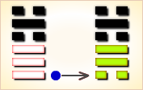
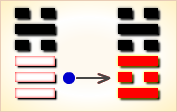
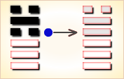
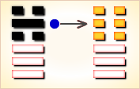

周易第5卦_需卦(水天需)_坎上乾下
如有疑问互相交流，微信：470283584
周易第5卦详解
需卦原文
需。有孚，光亨，贞吉。利涉大川。
象曰：云上于天，需；君子以饮食宴乐。
白话文解释
需卦：抓到俘虏。大吉大利，吉利的卜问。有利于涉水渡河。
《象辞》说：需的上卦为坎，表示云；下卦为乾，表示天。云浮聚于天上，待时降雨是需卦的卦象。君子观此卦象，可以宴饮安乐，待时而动。
《断易天机》解
需卦坎上乾下，为坤宫游魂卦。需为踌躇、期待，虽然刚强，但前面有险阻，应当等待，涉大川则利。
北宋易学家邵雍解
坎陷当前，遇阻不进；大器晚成，收成在后。
得此卦者，时机尚未成熟，需要耐心等待，急进反会见凶。
台湾国学大儒傅佩荣解
时运：时机尚未成熟，耐心等待。
财运：资本未集，无法开张。
家宅：平安是福。
身体：调节饮食，健康有望。
传统解卦
这个卦是异卦（下乾上坎）相叠，下卦是乾，刚健之意；上卦是坎，险陷之意。以刚逢险，宜稳健之妥，不可冒失行动，观时待变，所往一定成功。
大象：云登天上而未雨，不能急进，等待时机之象。
运势：智者必须待时而行，急进反见凶险。
事业：关键在于审时度势，耐心等待，事成于安祥，切勿冒险，欲速不达。自己要充满自信，临危不惧，坚守中正，必可化险为夷。情况有利时，仍得居安思危。
经商：行动之初，情况困难，必须以极大的耐心，创造条件和机会，行事光明磊落，观时待变，实现愿望。事情接近成功时，更应小心谨慎，切莫功亏一篑。
求名：时机尚不成熟，应耐心等待。这时应坚定信念，不为闲言流语所动摇，努力丰富自己，再求助可靠的人便可成功。
婚恋：慎重，切不可草率行事，逐渐培养感情，以诚实、热情相待，会发生变故，仍可以有良好的结局。双方都应懂得以柔克刚的道理。
决策：前途光明，有雄心大志，且可实现。为此需要积蓄实力，等待时机，大器晚成。本人具有坚强的意志，冷静的头脑。前进途中会遇到困难和险阻，必须十分谨慎，坦然对待小人的中伤，在灾祸在面前能镇静自若。不轻举妄动，冷静选择方向。为人谦和、坦率，多有他人相助，促使事业成功。当时机成熟后，必然一帆风顺。
台湾张铭仁解卦
需：表示需要、需求，但却又是时机未到。此卦凶中带吉，需耐心等待，则事情可成。健康方面，要特别注意。
解释：需要等待时机。
特性：谦恭有礼，性格保守，稍被动，但为人诚恳，欲求不高，中晚年才渐入佳境。不利早婚，有宗教艺术兴趣。
运势：宜退守正道，不宜冒险前进，投机急取反而失利。须知贪小失大，智者必须待时也。
家运：初为多事之秋，须凭智慧耐心挽救颓势。
疾病：病情拖延，须留心治疗，为头、胸、肺、泌尿系统等病。
胎孕：临产之时才占卜，表示会有障碍。防克产母。
子女：得子迟。
周转：不能预期而得，有延滞。
买卖：有口舌不可成就，亦勿贪小而失大。
等人：迟到。
寻人：此出走之人因感情之事，在西北或北方。
失物：即时不能寻回，需经过一段时间将会出现。
外出：充分准备齐全后，可平安无事。
考试：要多用功。
诉讼：暂时未能了结，以和为贵。
求事：不宜急取，急亦不得，再等待，再寻求。
改行：不宜。
开业：不宜。
周易第5卦初九爻详解
初九爻辞
初九。需于郊，利用恒，无咎。
象曰：需于郊，不犯难行也；利用恒，无咎，未失常也。
白话文解释
初九：在郊外等侯，应该照旧等待下去，没有危险。
《象辞》说：在郊外等候，是说不能冒险前进。照旧等待下去，没有危险，这是因为待机而动没有违反正常的原则。
北宋易学家邵雍解
平：得此爻者，宜守旧，则无灾祸。做官的须守常职，耐心等待机会。
台湾国学大儒傅佩荣解
时运：必须久待，守恒为要。
财运：暂勿投资，货物无损。
家宅：可居郊外。
身体：幽居养病，终无大碍。
初九变卦

初九爻动变得周易第48卦：水风井。这个卦是异卦（下巽上坎）相叠。坎为水；巽为木。树木得水而蓬勃生长。人靠水井生活，水井由人挖掘而成。相互为养，井以水养人，经久不竭，人应取此德而勤劳自勉。
周易第5卦九二爻详解
九二爻辞
九二。需于沙，小有言，终吉。
象曰：需于沙，衍在中也；虽小有言，以终吉也。
白话文解释
九二：在沙地上等待，稍微有过错，最后还是吉利的。
《象辞》说：在沙地上等待，沙地软柔难通行，将有延误事机之失，这过失在自身。虽然稍微有过错，最后的结果还是好的。
北宋易学家邵雍解
吉：得此爻者，会受到争诉之扰，若能以宽厚待人，则不辩自明。做官的会受到流言的困扰，但最后吉祥。
台湾国学大儒傅佩荣解
时运：流言困阻，最后吉祥。
财运：货运不通，无害商业。
家宅：口舌之争。
身体：心胸宽大，自然吉祥。
九二变卦

九二爻动变得周易第63卦：水火既济。这个卦是异卦（下离上坎）相叠。坎为水，离为火，水火相交，水在火上，水势压倒火势，救火大功告成。既，已经；济，成也。既济就是事情已经成功，但终将发生变故。
周易第5卦九三爻详解
九三爻辞
九三。需于泥，致寇至。
象曰：需于泥，灾在外也。自我致寇，敬慎不败也。
白话文解释
九三：在泥淖中等待，把强盗招引过来。
《象辞》说：在泥淖中等待，泥淖污秽，环境险恶，灾难就在附近。由自己招致了强盗，但郑重谨慎，随机应变，就可不受损伤。
北宋易学家邵雍解
凶：得此爻者，须防止窃盗之患，亦要预防水险。做官的会被贬职。
台湾国学大儒傅佩荣解
时运：难期上达，谨慎自持。
财运：无法流通，小心受骗。
家宅：婚事难成，成则怨偶。
身体：小心外伤。
九三变卦
九三爻动变得周易第60卦：水泽节。这个卦是异卦（下兑上坎）相叠。兑为泽，坎为水。泽有水而流有限，多必溢于泽外。因此要有节度，故称节。节卦与涣卦相反，互为综卦，交相使用。天地有节度才能常新，国家有节度才能安稳，个人有节度才能完美。
周易第5卦六四爻详解
六四爻辞
六四。需于血，出自穴。
象曰：需于血，顺以听也。
白话文解释
六四：起初在血泊中滞留，后来从凶险的陷阱中逃脱出来。
《象辞》说：在血泊中滞留，坐等不测的命运降临，六四之爻处在九五之爻的威逼之下，只得顺从强者，听从摆布。
北宋易学家邵雍解
平：得此爻者，坏运逐渐远离，恢复平静。做官的能全身而退。从事国学者可出身成名。
台湾国学大儒傅佩荣解
时运：用尽心力才可出头。
财运：投资矿业，有利可图。
家宅：乔迁之喜。
身体：调养气血，和顺阴阳。
六四变卦

六四爻动变得周易第43卦：泽天夬。这个卦是异卦（下乾上兑）相叠。乾为天为健；兑为泽为悦。泽气上升，决注成雨，雨施大地，滋润万物。五阳去一阴，去之不难，决（去之意）即可，故名为夬（guài），夬即决。
周易第5卦九五爻详解
九五爻辞
九五。需于酒食，贞吉。
象曰：酒食贞吉，以中正也。
白话文解释
九五：在酒宴上等待，这是吉利的占兆。
《象辞》说：有酒有肉，吉利之兆，因为九五之爻处于上卦中位，象征其人有中正的品德，自能择善而居，处优容之境。
北宋易学家邵雍解
吉：得此爻者，会物产丰富，衣食不缺，也会有婚嫁之喜。做官的食禄会丰厚。
台湾国学大儒傅佩荣解
时运：功成名就，可以宴乐。
财运：投资饮食业，可获利。
家宅：婚嫁得宜。
身体：饮食调理。
九五变卦

九五爻动变得周易第11卦：地天泰。这个卦是异卦（下乾上坤）相叠，乾为天，为阳；坤为地，为阴，阴阳交感，上下互通，天地相交，万物纷纭。反之则凶，万事万物，皆对立，转化，盛极必衰，衰而转盛，故应时而变者泰（通）。
周易第5卦上六爻详解
上六爻辞
上六。入于穴，有不速之客三人来，敬之终吉。
象曰：不速之客，敬之终吉；虽不当位，未大失也。
白话文解释
上六：进入地穴式的房屋，有三位不速之客来到，恭敬地接待他们，结果是吉利的。
《象辞》说：不速之客来了，恭敬地接待他们，结果是吉利的。因为全卦阳刚过甚，逼压阴柔，但是上六处阴位，位置合适，所以有惊无险，没有大的损失。
北宋易学家邵雍解
平：得此爻者，宜谨慎，则忧愁自散。做官的会有升迁之机会，但须防谗邪之流。
台湾国学大儒傅佩荣解
时运：凭险自守，和解为贵。
财运：得价则售，不可贮藏。
家宅：持家有道；少男乃吉。
身体：病况凶险，不存侥幸。
上六变卦
上六爻动变得周易第9卦：风天小畜。这个卦是异卦（下乾上巽）相叠，乾为天，巽为风。喻风调雨顺，谷物滋长，故卦名小畜（蓄）。力量有限，须待发展到一定程度，才可大有作为。